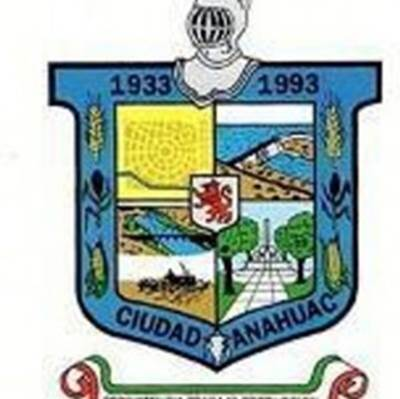
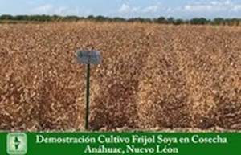
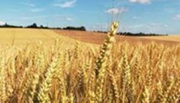
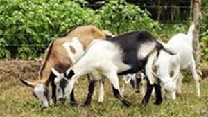
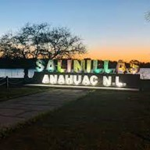
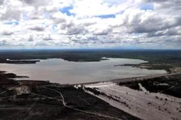
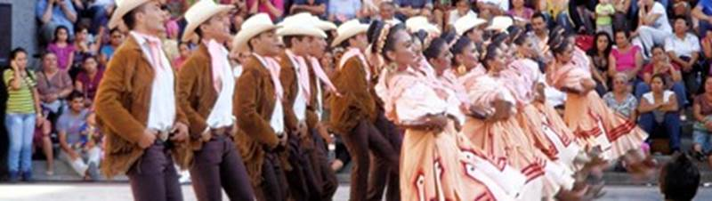

Debe su nombre en honor a la región que ocupa el Valle de México o Meseta de Anáhuac. es una entidad políticamente joven. El área en que está constituida perteneció al municipio de Lampazos de Naranjo, Nuevo León, en su mayor parte, y una pequeña extensión al municipio de Vallecillo, Nuevo León. Anáhuac se fundó el 31 de mayo de 1935 por José Antonio Rodríguez con las obras de la presa Venustiano Carranza (antes llamada Don Martín), y su nombre significa "lugar donde brota el agua". Es el municipio que tiene frontera con los Estados Unidos, a través del Puente Internacional de Colombia, el primer paso fronterizo en la historia del Estado. Cuna del Médico Alfredo Piñeiro López.
El municipio se ubica en terreno plano, con escasas elevaciones montañosas. La zona plana abarca aproximadamente el 75% de la superficie de extensas praderas, continuación de las de Texas diseminadas por el municipio por vegetación de matorral mediano espinoso y áreas cultivadas. La zona semiplana abarca aproximadamente el 25% de la superficie localizada en el noroeste, sureste, y suroeste de la cabecera y corresponden a lomeríos de poca altura constituidos por Lomas del Chino.
La extensión del municipio es 4,547 kilómetros cuadrados.
En 2020, la población en Anáhuac fue de 18,030 habitantes (49.1% hombres y 50.9% mujeres). En comparación a 2010, la población en Anáhuac decreció un -2.44%.
En 2020, 3.89% de la población en Anáhuac no tenía acceso a sistemas de alcantarillado, 3.36% no contaba con red de suministro de agua, 0.62% no tenía baño y 1.76% no poseía energía eléctrica.
El municipio de Anáhuac tiene diversas fuentes de empleo e ingresos:
Agricultura: la tierra del municipio se mantiene en dos formas: la ejidal y la propiedad privada.
Los cultivos son trigo, sorgo, grano y forraje.

Ganadería: se encuentra ganado bovino, caprino, equino, ovino, porcino y además
de venados.

La flora en este municipio corresponde a un clima seco cuya vegetación característica es de estepa (serófilas y xerófitas), las cuales resisten grandes oscilaciones térmicas. Entre algunas de las maderables están el mezquite, huizache, chaparro prieto, granjero y gobernadora. En cuanto a las no maderables existe gran cantidad de plantas, siendo algunas de ellas lechuguilla, biznaga, etcétera.
En cuanto a la fauna, las principales especies que existen son: venado cola blanca, jabalí, tejón, gato montés, mapache, zorrillo, coyote, liebre, conejo, tlacayote, tlacuache, armadillo, aguililla, gavilán, tecolote, paloma ala blanca, halcón y codorniz.
2020
Con la pandemia del COVID-19, la población del municipio de Anáhuac, Nuevo
León, se debate entre el miedo, la incertidumbre, la desconfianza, la
violencia, y la incredulidad.
De leyendas no se conocen muchos, pero hay una llamada la estación Rodríguez que es una historia antigua. Y la leyenda del rio salado (Hoy, el río sigue en silencio su largo camino al mar; ajeno a la presencia de los pastores y pescadores que ya forman parte de su paisaje. Indiferente también a los buscadores de tesoros que con modernos aparatos o la sola inspiración, buscan llenos de codicia o esperanza las cajas perdidas. Mientras tanto, el misterio perdura y se pasea entre sauces y jarales, susurrando en el viento historias de fantasmas que aún cabalgan en retirada o pelean desesperados el último combate.)
Cabrito asado, cabrito al acero condimentado con hierbas finas y orégano, empalmes de frijoles y carne deshebrada. Queso tipo panela, asado de puerco, y dulce de leche recocida.
El municipio reúne las condiciones ideales para la práctica del turismo cinegético, como la pesca deportiva en la laguna de Salinillas, y la presa Venustiano Carranza se cuenta con área recreativa y de esparcimiento, también se practica la cacería del venado cola blanca, la paloma alas blancas, el jabalí, la codorniz, gato montés y cerdo salvaje.
Todos aquellos amantes de la pesca deportiva, a tan solo 45 kilómetros del municipio, pueden visitar la laguna de salinillas, sitio ideal para esta práctica donde se puede encontrar especies como lobina, carpa, mojarra y bagre.

Otras de las actividades sobresalientes que se pueden realizar aquí es la caza. Entre las especies que destacan por importancia son: venado cola blanca, pecarí de collar, paloma güilota, codorniz, coyote.
Construida con el fin de aprovechar las aguas del Río Salado esta presa se ubica a 60 kilómetros al noreste del municipio y es actualmente uno de los principales centros turísticos del lugar.

Sobresalen sus trajes típicos a pesar de ser uno de los municipios más jóvenes del Estado; Anáhuac tiene influencias culturales recientes, de los pobladores que lo fundaron, su traje representativo tiene las características de los vestidos de gala de la región del bajío.
El traje de una sola pieza se ciñe a la cintura y está confeccionado en razo blanco (que simboliza el cultivo de algodón), posee falda larga circular y sin pliegues que se acompaña por un aro y una crinolina que le permiten una estructura bombachada, la blusa tiene cuello semicirculado cuyos bordes se alargan casi hasta el origen de las mangas que son largas y tienen en su parte superior un abultamiento estilo imperio, se bordan sobre la blusa con hilo dorado unas espigas de trigo; sobre la parte frontal de la falda, se observa con aplicaciones de lentejuela dorada, verde y azul la presa San Martín, el vestido se porta con zapatos blancos, abiertos de la punta y con medio tacón; el cabello de la mujer debe ir recogido.

Dentro de la música tenemos la canción del oro blanco, el canto a Anáhuac, a un hijo de Anáhuac y el corrido a ciudad Anáhuac.
Entre
la comunidad de Anáhuac predomina la religión católica, coexistiendo con otro
tipo de creencias religiosas.